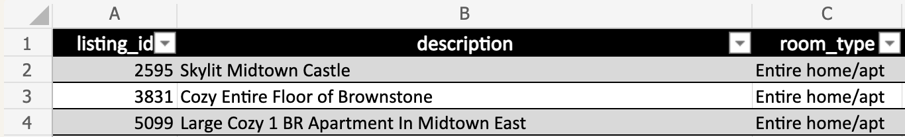

1 Airbnb listings in New York City
Welcome to New York City, one of the most-visited cities in the world. As a result, there are many Airbnb listings in New York City to meet the high demand for temporary lodging for anywhere between a few nights to many months. In this notebook, we will take a closer look at the New York Airbnb market by combining data from multiple file types like .csv, .tsv, and .xlsx (Excel files).
A CSV, or comma-separated-values, file is one of the most common ways that tabular data is stored. In a CSV file, each value is separated by a comma and each row is separated by a newline. Since this file format is so widely used and is non-proprietary, it’s great for sharing data with others and can be parsed by a variety of software.
"listing_id","price","nbhood_full"
2595,"225 dollars","Manhattan, Midtown"
3831,"89 dollars","Brooklyn, Clinton Hill"
5099,"200 dollars","Manhattan, Murray Hill" A TSV, or tab-separated-values, file is similar to a CSV file, but tabs are used to separate values rather than commas:
listing_id host_name last_review
2595 Jennifer May 21 2019
3831 LisaRoxanne July 05 2019
5099 Chris June 22 2019Excel files are often used by spreadsheet users. Excel files contain information about formatting and formulas created in Excel, but these things aren’t usually necessary when working with data in R. Excel files can also contain multiple tables, so these files need to be imported carefully to make sure the correct table is used. The Excel file format is also proprietary, so there’s a more limited pool of software that can read it.

The three files that are available contain data on 2019 Airbnb listings. Here are the details:
datasets/airbnb_price.csv
This is a CSV file containing data on the prices and neighborhoods of Airbnbs.
- listing_id
- unique identifier of listing
- price
- nightly listing price in USD
- nbhood_full
- name of borough and neighborhood where listing is located
datasets/airbnb_room_type.xlsx
This is an Excel file containing data on Airbnb listing descriptions and room types.
- listing_id
- unique identifier of listing
- description
- listing description room_type
- Airbnb has three types of rooms shared rooms, private rooms, and entire homes/apartments
datasets/airbnb_last_review.tsv
This is a TSV file containing data on Airbnb host names and review dates.
- listing_id
- unique identifier of listing host_name
- name of listing host last_review
- date when the listing was last reviewed
- Note
- This project lets you apply the skills from the Importing and Cleaning Data with R skill track, including importing from different file types and cleaning numerical, categorical, and date data. We recommend that you take the courses in this track before starting this project.
Introduction
In this project, you will apply your data importing and cleaning skills to uncover insights about the Airbnb market in New York City.
You will import data from multiple file types and combine them to answer questions about the Airbnb market in New York. You will also use your string cleaning and date manipulation skills to extract accurate information from the datasets. The packages and tools used here are utilized by data scientists everyday since so much of the world’s data is stored in unconventional formats and is not clean or analysis-ready.
1.1 Instructions
You are a consultant working for a real estate start-up and have been asked to look into the short-term rental market in New York, so you’ve gathered Airbnb listing data from several different sources. You’ll examine this data to answer the following questions, but you’ll need to combine the different files from your three sources into one dataset and clean it in order to calculate the metrics you’re interested in.
Your questions are as follows:
What is the average listing price? Save your answer as a numeric variable,
avg_price.How many of the listings are private rooms? Save your answer as a numeric variable called nb_private_rooms.
When were the earliest and most recent reviews in the dataset? Save these as Dates in a tibble called review_dates. It should contain two columns named first_reviewed, which contains the earliest date in the dataset, and last_reviewed, which contains the latest date in the dataset.